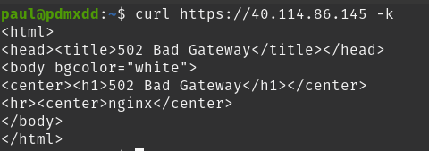

Operation issues are issues that don’t involve the source code of the deployed application. However, you may end up with issues related to external configuration files such as appsettings.json.
This could be issues relating to:
Note
The following group walkthrough will require you to perform these troubleshooting steps together to fix a broken deployment. The following is one example of something that could be wrong.
The troubleshooting process is kicked off when an issue is brought to our attention. In this case, someone sends us a screenshot of their browser encountering a Connection Timeout when attempting to access the public address of the hosted Coding Events API:
Our first step is to identify this issue by reproducing it on our system. This will rule out the possibility of end-user error.
First, let’s reproduce the issue in the exact way the end user did with a request from the browser:
Looks like we are getting the same issue. Let’s reproduce this error with PowerShell using Invoke-RestMethod from our terminal:
Since this is a learning environment, let’s reproduce the issue again, this time from Bash using curl:

We can definitively state that a Connection Timeout is happening when users attempt to access the Coding Events API on port 443 from the browser, Invoke-RestMethod and curl.
The next step is to research the potential causes of the issue. Typically you would rely on your experience and research skills to come up with a list of potential causes, but to save time we have provided them for you:
The next step is to isolate the root cause of the issue by systematically eliminating potential causes until we have found the root cause, or have exhausted our known options.
In this case, we would need to check that the initial request was going to the correct URL, that the VM is currently running, and that the VM has the appropriate NSG inbound security rule for port 443. At this point in time in the class, you should know how to do these things through the Azure Web Portal or the AZ CLI.
Let’s suppose that the root cause was that the VM lacks a NSG rule for port 443, and we discovered this by looking at all three of the potential issues and the only one that was incorrect were the NSG rules.
Our next step would be to research a solution to the issue, but because of our experience we can skip researching as we already know how to fix it. In this case, we simply need to create a new NSG inbound rule for port 443.
After creating the inbound port rule, our final step is to reproduce the steps to ensure our issue has been resolved.
Browser:

Our screen advanced and now we are getting the message about accepting the risk associated with a self-signed certificate. That’s what we expect. Let’s checkout PowerShell and Bash:
PowerShell:

Bash:
Uh oh.
We are getting a new error.
The good news is that we resolved our first issue by creating a port 443 NSG inbound rule. Our fix resolved the issue, and we are no longer experiencing a Connection Timeout error. We have fixed this error and need to move on to the next one, which according to our web requests is a 502 Bad Gateway.
Note
An issue is not always solved with one change. In some instances, a combination of steps are necessary to fix one issue.
In this case, fixing one issue revealed a new issue. Revealing a new issue is great progress in troubleshooting, assuming you have checked that your fix resolved the initial issue, which we have done.
The final step is being able to communicate this issue and its resolution with others.
A communication to the affected team members might look like this:
The Coding Events API located at
https://40.114.86.145/was not responding to HTTP requests in the browser,Invoke-RestMethodorcurl. Users were experiencing aConnection Timeouterror.We researched potential causes for this issue and determined that the virtual machine did not have a NSG inbound rule allowing traffic through port 443. We opened this port to all public traffic and the issue was fixed.
The
Connection Timeouterrors have not been experienced acrossInvoke-RestMethod,curlor the browser after making the change.
Note
This section illustrates the entire troubleshooting process for a hypothetical operations issue in the Coding Events API deployment.
The next section will discuss two hypothetical case studies that explore potential development issues. The objective is the same, to gain a strong understanding of the troubleshooting process.